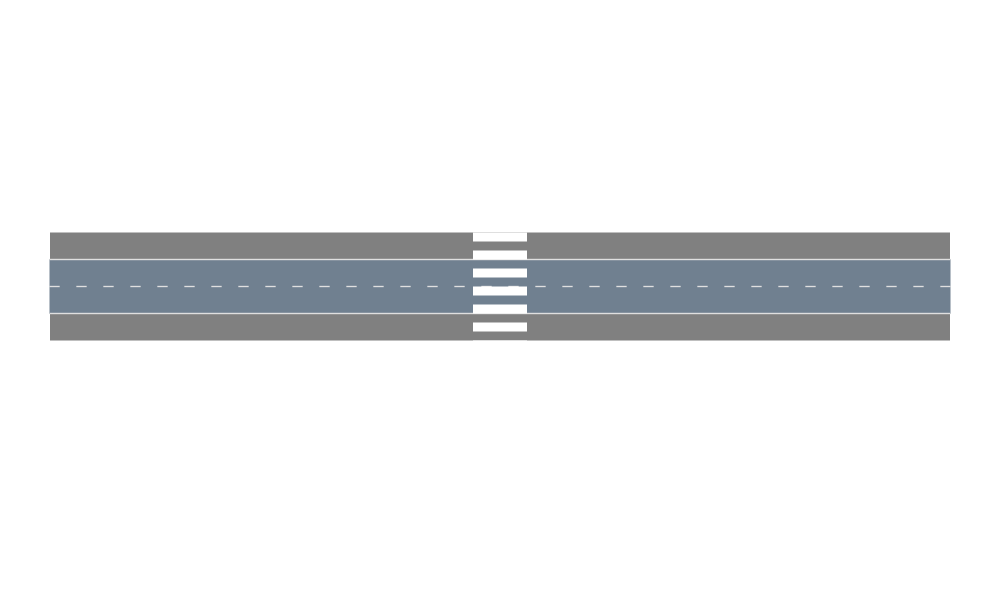

Sidewalk

In this notebook, we will be creating a sidewalk environment in which pedestrians can walk along the sidewalk and cross the street as cars pass.
using Parameters
using AutomotiveSimulator
using AutomotiveVisualization
using CairoDefine sidewalk IDs
const TOP = 1
const BOTTOM = 2Creating the Environment
Here, we create a new type of environment called SidewalkEnv. It consists of a roadway, crosswalk, and sidewalk. A sidewalk is a Vector of Lanes that run alongside the road.
@with_kw mutable struct SidewalkEnv
roadway::Roadway
crosswalk::Lane
sidewalk::Vector{Lane}
end;Defining the Sidewalk
We define the sidewalk's parameters.
# Geometry parameters
roadway_length = 100.
crosswalk_length = 15.
crosswalk_width = 6.0
crosswalk_pos = roadway_length/2
sidewalk_width = 3.0
sidewalk_pos = crosswalk_length/2 - sidewalk_width / 2Now we create the sidewalk environment. Our environment will consist of:
- 1-way road with 2 lanes
- Unsignalized zebra crosswalk perpendicular to the road
- Sidewalks above and below the road
Generate straight roadway of length roadway_length with 2 lanes. Returns a Roadway type (Array of segments). There is already a method to generate a simple straight roadway, which we use here.
roadway = gen_straight_roadway(2, roadway_length)RoadwayGenerate the crosswalk. Our crosswalk does not have a predefined method for generation, so we define it with a LaneTag and a curve.
n_samples = 2 # for curve generation
crosswalk = Lane(LaneTag(2,1), gen_straight_curve(VecE2(crosswalk_pos, -crosswalk_length/2),
VecE2(crosswalk_pos, crosswalk_length/2),
n_samples), width = crosswalk_width)
cw_segment = RoadSegment(2, [crosswalk])
push!(roadway.segments, cw_segment) # Append the crosswalk to the roadway
# Generate the sidewalk
top_sidewalk = Lane(LaneTag(3, TOP), gen_straight_curve(VecE2(0., sidewalk_pos),
VecE2(roadway_length, sidewalk_pos),
n_samples), width = sidewalk_width)
bottom_sidewalk = Lane(LaneTag(3, BOTTOM), gen_straight_curve(VecE2(0., -(sidewalk_pos - sidewalk_width)),
VecE2(roadway_length, -(sidewalk_pos - sidewalk_width)),
n_samples), width = sidewalk_width)Lane{Float64}(LaneTag(3, 2), CurvePt{Float64}[CurvePt({0.000, -3.000, 0.000}, 0.000, 0.000, NaN), CurvePt({100.000, -3.000, 0.000}, 100.000, 0.000, NaN)], 3.0, SpeedLimit(-Inf, Inf), LaneBoundary(:unknown, :unknown), LaneBoundary(:unknown, :unknown), LaneConnection{Int64,Float64}[], LaneConnection{Int64,Float64}[])Note: we subtract the sidewalk_width from the sidewalk position so that the edge is flush with the road.
sw_segment = RoadSegment(3, [top_sidewalk, bottom_sidewalk])
push!(roadway.segments, sw_segment)3-element Array{RoadSegment{Float64},1}:
RoadSegment{Float64}(1, Lane{Float64}[Lane{Float64}(LaneTag(1, 1), CurvePt{Float64}[CurvePt({0.000, 0.000, 0.000}, 0.000, NaN, NaN), CurvePt({100.000, 0.000, 0.000}, 100.000, NaN, NaN)], 3.0, SpeedLimit(-Inf, Inf), LaneBoundary(:broken, :white), LaneBoundary(:solid, :white), LaneConnection{Int64,Float64}[], LaneConnection{Int64,Float64}[]), Lane{Float64}(LaneTag(1, 2), CurvePt{Float64}[CurvePt({0.000, 3.000, 0.000}, 0.000, NaN, NaN), CurvePt({100.000, 3.000, 0.000}, 100.000, NaN, NaN)], 3.0, SpeedLimit(-Inf, Inf), LaneBoundary(:solid, :white), LaneBoundary(:broken, :white), LaneConnection{Int64,Float64}[], LaneConnection{Int64,Float64}[])])
RoadSegment{Float64}(2, Lane{Float64}[Lane{Float64}(LaneTag(2, 1), CurvePt{Float64}[CurvePt({50.000, -7.500, 1.571}, 0.000, 0.000, NaN), CurvePt({50.000, 7.500, 1.571}, 15.000, 0.000, NaN)], 6.0, SpeedLimit(-Inf, Inf), LaneBoundary(:unknown, :unknown), LaneBoundary(:unknown, :unknown), LaneConnection{Int64,Float64}[], LaneConnection{Int64,Float64}[])])
RoadSegment{Float64}(3, Lane{Float64}[Lane{Float64}(LaneTag(3, 1), CurvePt{Float64}[CurvePt({0.000, 6.000, 0.000}, 0.000, 0.000, NaN), CurvePt({100.000, 6.000, 0.000}, 100.000, 0.000, NaN)], 3.0, SpeedLimit(-Inf, Inf), LaneBoundary(:unknown, :unknown), LaneBoundary(:unknown, :unknown), LaneConnection{Int64,Float64}[], LaneConnection{Int64,Float64}[]), Lane{Float64}(LaneTag(3, 2), CurvePt{Float64}[CurvePt({0.000, -3.000, 0.000}, 0.000, 0.000, NaN), CurvePt({100.000, -3.000, 0.000}, 100.000, 0.000, NaN)], 3.0, SpeedLimit(-Inf, Inf), LaneBoundary(:unknown, :unknown), LaneBoundary(:unknown, :unknown), LaneConnection{Int64,Float64}[], LaneConnection{Int64,Float64}[])])Initialize crosswalk environment
env = SidewalkEnv(roadway, crosswalk, [top_sidewalk, bottom_sidewalk]);Since there is no defined add_renderable! method for the crosswalk and the sidewalk, we must define it ourselves.
function AutomotiveVisualization.add_renderable!(rendermodel::RenderModel, env::SidewalkEnv)
# Render sidewalk
for sw in env.sidewalk
curve = sw.curve
n = length(curve)
pts = Array{Float64}(undef, 2, n)
for (i,pt) in enumerate(curve)
pts[1,i] = pt.pos.x
pts[2,i] = pt.pos.y
end
add_instruction!(rendermodel, render_line, (pts, colorant"grey", sw.width, Cairo.CAIRO_LINE_CAP_BUTT))
end
# Render roadway
roadway = gen_straight_roadway(2, roadway_length)
add_renderable!(rendermodel, roadway)
# Render crosswalk
curve = env.crosswalk.curve
n = length(curve)
pts = Array{Float64}(undef, 2, n)
for (i,pt) in enumerate(curve)
pts[1,i] = pt.pos.x
pts[2,i] = pt.pos.y
end
# We can add render instructions from AutomotiveVisualization.
# Here we want the crosswalk to appear as a white-striped zebra crossing rather than a road.
add_instruction!(rendermodel, render_dashed_line, (pts, colorant"white", env.crosswalk.width, 1.0, 1.0, 0.0, Cairo.CAIRO_LINE_CAP_BUTT))
return rendermodel
end
snapshot = render([env])
Now we can define our pedestrian.
We define its class and the dimensions of its bounding box.
const PEDESTRIAN_DEF = VehicleDef(AgentClass.PEDESTRIAN, 1.0, 1.0)We assign models to each agent in the scene.
timestep = 0.10.1Crossing pedestrian definition
ped_init_state = VehicleState(VecSE2(49.0,-3.0,0.), env.sidewalk[BOTTOM], roadway, 1.3)
ped = Entity(ped_init_state, PEDESTRIAN_DEF, :pedestrian)Entity{VehicleState,VehicleDef,Symbol}(VehicleState(VecSE2({49.000, -3.000}, 0.000), Frenet(RoadIndex({1, 0.490000}, {3, 2}), 49.000, 0.000, 0.000), 1.300), VehicleDef(PEDESTRIAN, 1.000, 1.000), :pedestrian)Car definition
car_initial_state = VehicleState(VecSE2(0.0, 0., 0.), roadway.segments[1].lanes[1],roadway, 8.0)
car = Entity(car_initial_state, VehicleDef(), :car)
scene = Scene([ped, car])Scene{Entity{VehicleState,VehicleDef,Symbol}}(2 entities)Define a model for each entity present in the scene
models = Dict{Symbol, DriverModel}(
:pedestrian => SidewalkPedestrianModel(
timestep=timestep, crosswalk=env.crosswalk,
sw_origin = env.sidewalk[BOTTOM], sw_dest = env.sidewalk[TOP]
),
:car => LatLonSeparableDriver( # produces LatLonAccels
ProportionalLaneTracker(), # lateral model
IntelligentDriverModel(), # longitudinal model
)
)
### SimulateFinally, we simulate and visualize the scene.
using Reel
nticks = 300
scenes = simulate(scene, roadway, models, nticks, timestep)
animation = roll(fps=1.0/timestep, duration=nticks*timestep) do t, dt
i = Int(floor(t/dt)) + 1
render([env, scenes[i]])
end;
We can use a slider to scroll through each scene in the simulation. This usually takes less time than rendering a video.
using Interact
using Reel
using Blink
#md
w = Window()
viz = @manipulate for i in 1 : length(scenes)
render([env, scenes[i]])
end
body!(w, viz)This page was generated using Literate.jl.